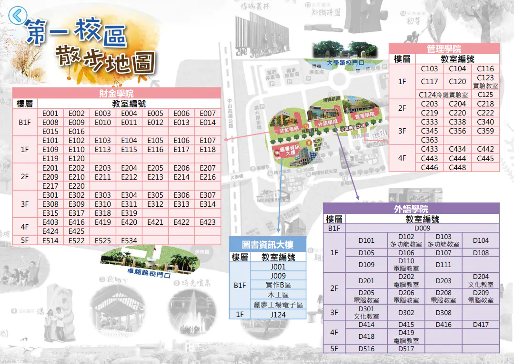

第一校區
歡迎來到國立高雄科技大學第一校區！以下是校區的散步地圖，您可以點選各個樓層或教室，了解更多資訊。
第一校區散步地圖
財經學院
B1F: E008, E009, E010, E011, E012, E013, E014
1F: E015, E016
2F: E201, E202, E203, E204, E205, E206, E207
外語學院
1F: D101, D105, D106, D107, D108, D109, D110
2F: D201, D202, D203, D204
3F: D301
4F: D102, D103, D104, D201, D202, D203, D204, D205, D206, D207, D208, D209, D301, D302, D308, D414, D415, D416, D417, D516, D517
圖書資訊大樓
1F: J001
3F: J124